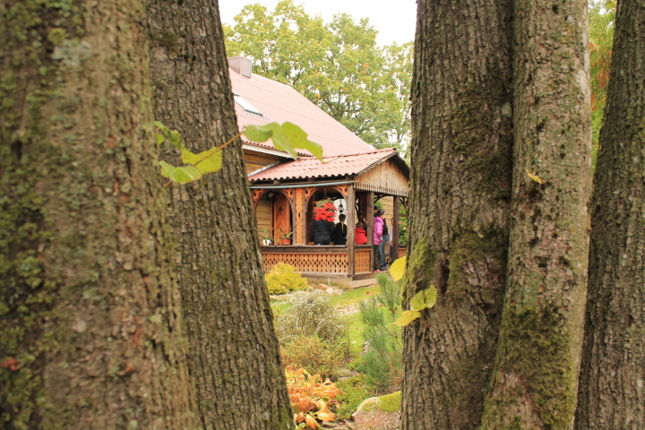

Vilkų Kampo kaimas yra netoli Švėkšnos, Šilutės rajone. J. M. Nogaičių sodyba yra įsikūrusi Vilkų Kampo Kapų kalno papėdėje, šalia Ašvos upės, kurioje yra didysis Vilkų Kampo akmuo. 1969m. sodyboje atlikti archeologiniai kasinėjimai, kurių metu rasti radiniai datuojami II - IX amžiumi. 2005m. vyko tautodailininkų pleneras, kurio metu buvo ištašytos skulptūros senkapio įamžinimui. 1998m. sodyboje įkurtame klojimo teatre buvo parodytas spektaklis "Piršlybos", 1999m. vyko "Vilkų Kampo country", 2011 m. vyko autorinių dainų vakaras. Sodyboje įkurtas gausus etnografinių eksponatų muziejus, taip pat galima aplankyti senovinių muzikos instrumentų muziejų, kuriame didžiausią dalį sudaro bandonijos ir armonikos.